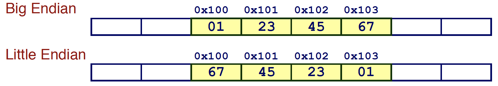
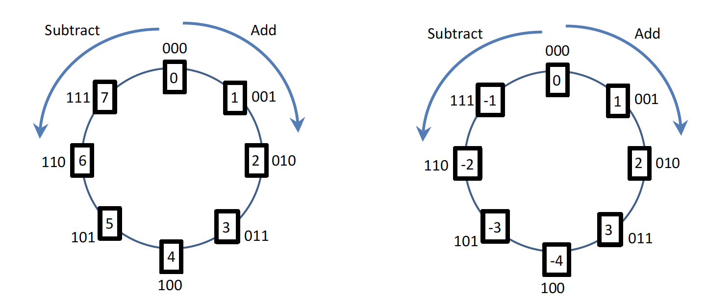
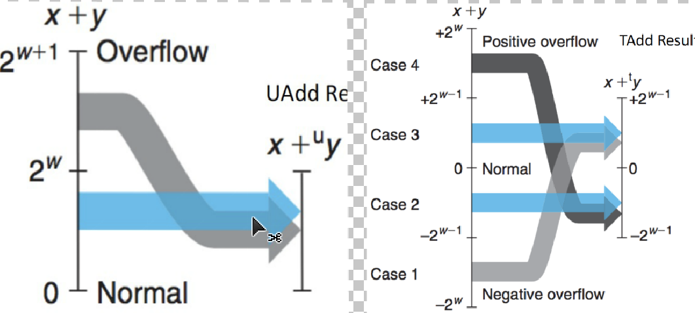
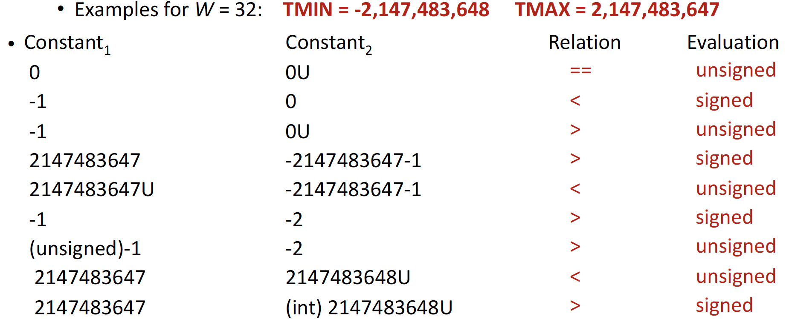
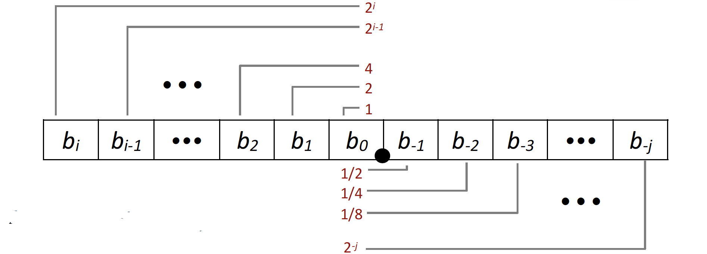
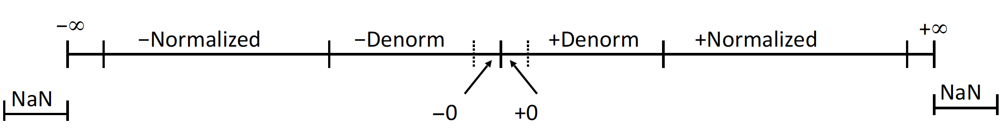
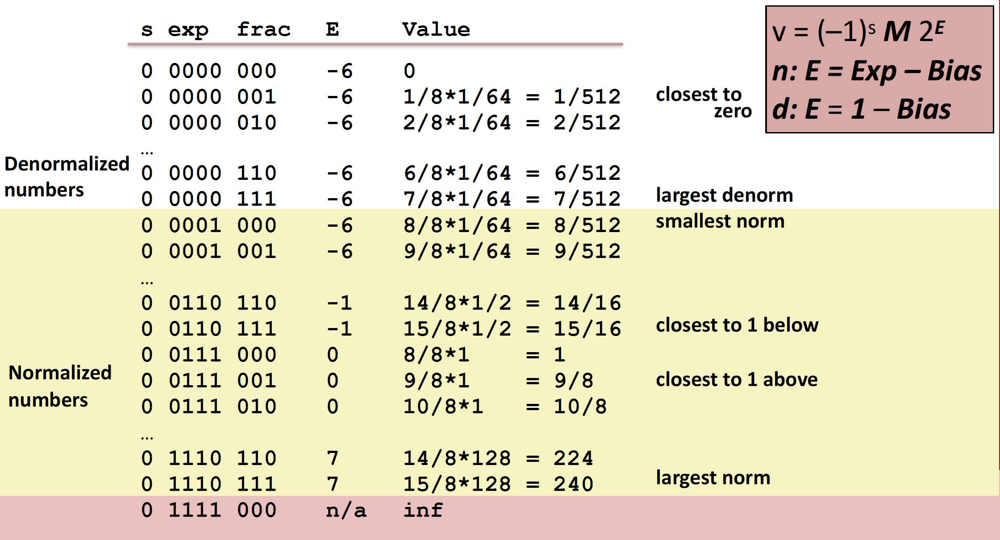
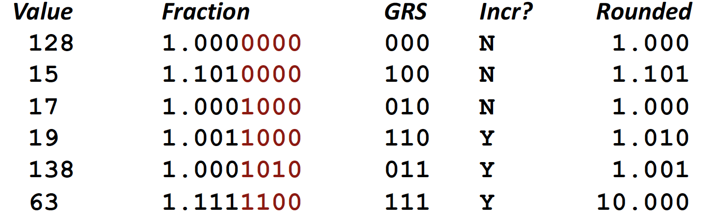

Basic Principle
In computer evey information is represented with binary form, which means they are interleaving 1 & 0 sequences.
Clarification
Why binary form and 1 & 0?
- Compared to analog circuit, digital circuit is easier to process and exclude noises.
- In digital circuit, 1 represents high voltage and 0 represents low voltage.
- Then binary comes.
Why Hexadecimal?
- More bits means complex sign or symbol for human to remember, fewer bits means longer numbers which are redundant.
- Then hexadecimal is the balance of complexity and length.
Word Size
- It equals the number of address bits and the integer-valued data.
Bit Manipulations
- Overflow will throw the overflowed bits away.
- ~, &, |, ^ are bitwise operators.
- Shift operation:
- Left shift x << y is always logical shift which means fill with 0’s on right.
- Right shift x >> y has logical shift and arithmetic shift which means replicating the most significant bit on left.
(Arithmetic shift helps to keep math properties of binary when right shift signed negative integers) - Undefined Behavior: shift amount < 0 or $ \ge $ word size
Typical C Data Type

Byte Ordering
- Big Endian: Sun, PPC Mac, Internet.
Least significant byte has highest address. - Little Endian: x86, ARM processors running Android, iOS, and Windows.
Least significant byte has lowest address. - Example with value - 0x01234567 start from address 0x100
Figure 2. Byte Ordering Visualization
Casting
- Same types: smaller one –> larger one.
- Diff types:
- If the signedness is same: smaller one –> larger one
- If the signedness differs:
- unsigned one has same or larger size: others –> unsinged type
- otherwise: smaller one -> larger one
Overflow vs Carry
- Overflow is for signed value and carry is for unsigned value.
Integer
Generally speaking, there are two kinds of integer - signed and unsigned. However, the underlying representation of integer will not get changed when you cast them beteween signed or unsigned.
!!!All examples are in 4 bits.
!!!All operations are bitwise manipulations.
Core principle
Coversion from signed integers to unsigned ones or in the other way round keeps bit representations and just do reinterpret.
Intuitive Idea(Not Taken)
- Idea: Left-most bit is sign bit, others work as normal data.
- Constraint: Basic math doest not work. E.g.
-0 + 1 = -1and7 + 1 = 0
2s complement
- Idea: Positive integer does not get changed, and use 2s complement to represent negative numbers.
- Explanation of 2s complement: Represent negative integer as complement of its absolute value plus 1, in Bitwise.
$$ \sim (0101)_2 + (1)_2 = (1011)_2 $$
Note: The left-most bit indicates the sign! - Advantages: Math works!!!
$$ \begin{align*}
(1111)_{2} + (0001)_2 &= (0000)_2 \\
-1 + 1 &= 0
\end{align*}
$$ - Special Value: $ \sim(1000)_2 + 1 = (1000)_2 $
Visualization

General Formula
With n bits:
- Range:
- Signed: $ {-2}^{n-1} \sim 2^{n-1} - 1\rightarrow off-balance \ between \ positive \ and \ negative \ numbers$
- Unsigned: $ 0 \sim 2^{n} - 1$
- Convertion to decimal
- $ B2U(X) = \sum\limits_{i=0}^{n-1} x_i \bullet 2^i $
- $ B2T(X) = -x_{n-1} \bullet 2^{n-1} + \sum\limits_{i=0}^{n-2} x_i \bullet 2^i $
Calculation
- Addition/Substraction:
Figure 4. Integer Addition Visualization - Multiplication: Up to $ 2 \bullet n$ bits, throw overflowed bits away.
Practice

String
- Based on ASCII, string can also be represented as integer number or a collection of 1 & 0 sequence in computer.
Float
Intuitive Idea(Not taken)
- Idea: $ \sum\limits_{k=-j}^{i} b_k \bullet 2^k $
Figure 6. Float Intuitive Idea - Constraint: Inefficient - Big value with lots of 0s and range is small.
IEEE Floating Point
- Structure:
$$ (-1)^s \bullet M \bullet 2^E $$- Sign bit s - sign bit.
- Significand M (mantissa) - frac part.
- Exponent E - exp part.
Figure 7. Float Structure
- Categories:
Figure 8. Float Category - Normalized Float
- M is $ 1.f_1f_2f_3f_4 $ with get an extra bit “for free”.
- $ E = unsigned \ encoded \ value \ of \ the \ bits - (2^{k-1} - 1)$ and E is any one except all 0.
- Denormalized Float
- M is $ 0.f_1f_2f_3f_4 $.
- $ E = 1 - (2^{k-1} - 1) $ and E is all 0.
- Special Float
- $ \pm \ INF: \ exp = 111…1, \ frac = 000…0 $
- $ \pm \ NAN: \ exp = 111…1, \ frac \neq 000…0 $
- Normalized Float
- Example with s: 1 bit, exp: 4-bits, frac: 3-bits. How about Distribution?
Figure 9. Float Example
Calulation
- Addition/Substraction: Extend samll
expto large one and then do normal addition.
(Associative does not work: (3.14 + 1e10) - 1e10 = 0, 3.14 + (1e10 - 1e10) = 3.14) - Multiplication: E = E1 + E2, M = M1 x M2
(Associatice and Distribution do not work: A - (1e20 x 1e20) x 1e-20 = inf, D - 1e20 x (1e20-1e20) = 0)
Rounding
- Methods: Nearest Even
- Explanation:
- > half way: round up.
- < half way: round down.
- = half way: round to nearest even.
(In binary form, only occurs when redundant bits are 100..00)
- Why: All others are statiscally biased.
- Example:
Figure 10. Round Example